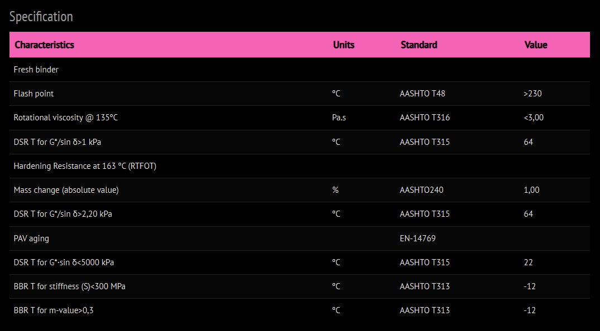

Bitumen PG 64‑22 – General Description │ Iran Bitumen Supply Int │ IBSI
Bitumen PG 64‑22 is a widely used Superpave Performance Grade asphalt binder designed for regions with warm to hot summers and moderately cold winters. According to the Superpave performance grading system, the designation PG 64‑22 means that the binder is engineered to resist rutting at high pavement temperatures up to 64°C while maintaining sufficient flexibility to resist thermal cracking at low pavement temperatures down to –22°C. This balance between high‑temperature stiffness and low‑temperature flexibility makes PG 64‑22 one of the most common and reliable binders for modern road construction. PG 64‑22 is formulated for pavements that are subjected to medium to heavy traffic loads and seasonal temperature variations. It provides excellent resistance to permanent deformation under high temperatures, helping to prevent rutting and shoving in heavily trafficked lanes. At the same time, its low‑temperature performance helps reduce the risk of cracking during colder periods, ensuring long‑term structural integrity and riding comfort. Because of this versatility, PG 64‑22 is frequently selected for national highways, regional roads, and urban networks in moderate to warm climate zones. Manufactured in accordance with AASHTO M320 specifications, Bitumen PG 64‑22 offers consistent quality and predictable performance from batch to batch. The binder is designed to meet strict criteria for viscosity, stiffness, and elasticity in both original and aged conditions, ensuring that it performs reliably throughout the pavement’s service life. Its rheological properties are optimized to provide good workability during mixing and compaction while maintaining the mechanical strength required under traffic and environmental loading.
Key Specifications
Bitumen PG 64‑22 is classified as a Performance Grade asphalt binder with a maximum pavement design temperature of 64°C and a minimum pavement design temperature of –22°C. This grading reflects its ability to resist rutting at elevated temperatures and to remain flexible enough to limit thermal cracking at low temperatures. Compliance with AASHTO M320 confirms that PG 64‑22 meets the required standards for Superpave binders, including performance in original, short‑term aged, and long‑term aged states. In practice, this means that PG 64‑22 maintains its performance characteristics over time, even after exposure to mixing temperatures, construction processes, and years of in‑service aging.
Main Applications
PG 64‑22 is extensively used in the construction and rehabilitation of highways and expressways where pavements are exposed to medium to heavy traffic and seasonal temperature swings. It is also commonly applied on urban and municipal roads, where stop‑and‑go traffic and turning movements demand a binder with good resistance to surface deformation. Industrial and logistics roads, as well as asphalt overlays and rehabilitation projects, frequently specify PG 64‑22 because it provides a dependable balance of durability, workability, and cost‑effectiveness. Its climate range makes it suitable for many regions with hot summers and moderate winters, which is why it has become a standard choice in many national specifications.
Key Benefits
The primary benefit of Bitumen PG 64‑22 is its ability to deliver long‑term pavement performance across a wide temperature range. Its high‑temperature stiffness helps prevent rutting and other forms of permanent deformation under heavy traffic and warm conditions, while its low‑temperature flexibility reduces the likelihood of thermal cracking in colder periods. This combination leads to pavements that remain smoother and more durable over time, reducing the need for frequent maintenance and rehabilitation. In addition, PG 64‑22 offers good adhesion to aggregates and stable behavior during mixing and compaction, contributing to uniform, high‑quality asphalt mixtures. Its widespread use and compliance with established Superpave standards give engineers and contractors confidence in its reliability for a broad range of road projects.

Specification of Bitumen PG 64-22